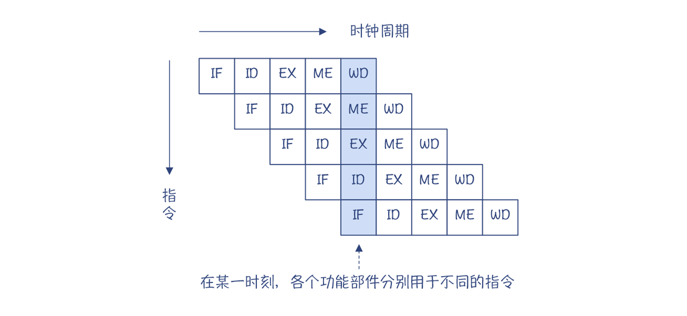
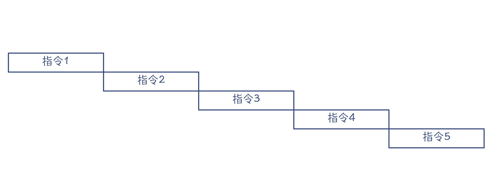
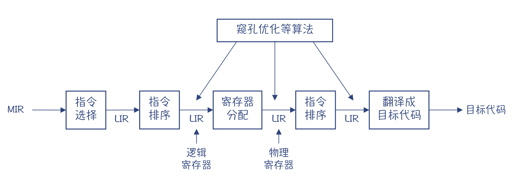
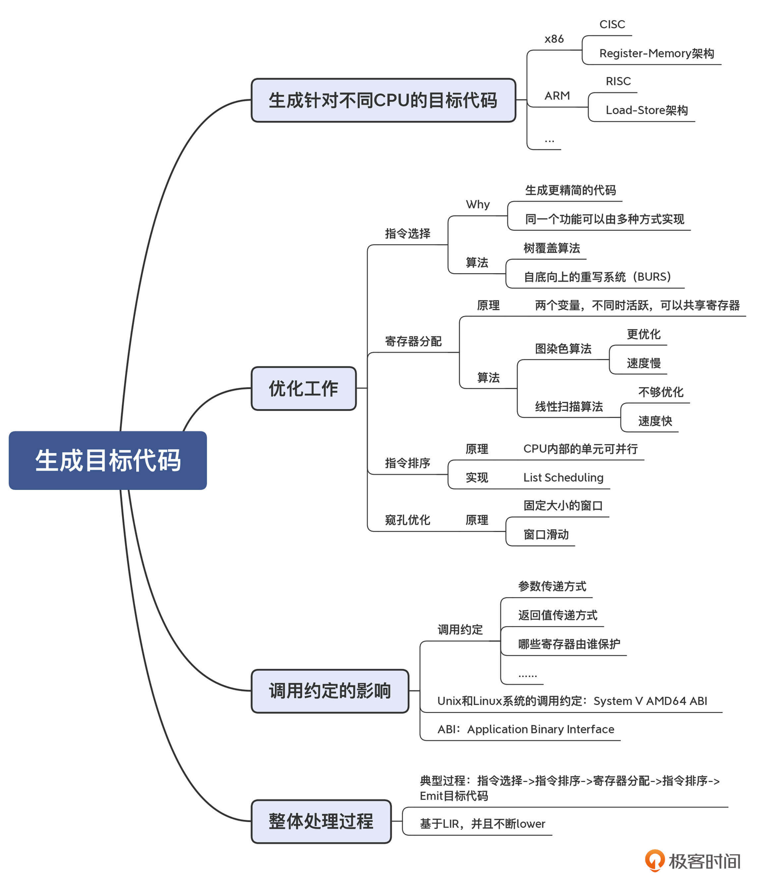

- 00 学习指南 如何学习这门编译原理实战课？.md.html
- 00 开篇词 在真实世界的编译器中游历.md.html
- 01 编译的全过程都悄悄做了哪些事情？.md.html
- 02 词法分析：用两种方式构造有限自动机.md.html
- 03 语法分析：两个基本功和两种算法思路.md.html
- 04 语义分析：让程序符合语义规则.md.html
- 05 运行时机制：程序如何运行，你有发言权.md.html
- 06 中间代码：不是只有一副面孔.md.html
- 07 代码优化：跟编译器做朋友，让你的代码飞起来.md.html
- 08 代码生成：如何实现机器相关的优化？.md.html
- 09 Java编译器（一）：手写的编译器有什么优势？.md.html
- 10 Java编译器（二）：语法分析之后，还要做些什么？.md.html
- 11 Java编译器（三）：属性分析和数据流分析.md.html
- 12 Java编译器（四）：去除语法糖和生成字节码.md.html
- 13 Java JIT编译器（一）：动手修改Graal编译器.md.html
- 14 Java JIT编译器（二）：Sea of Nodes为何如此强大？.md.html
- 15 Java JIT编译器（三）：探究内联和逃逸分析的算法原理.md.html
- 16 Java JIT编译器（四）：Graal的后端是如何工作的？.md.html
- 17 Python编译器（一）：如何用工具生成编译器？.md.html
- 18 Python编译器（二）：从AST到字节码.md.html
- 19 Python编译器（三）：运行时机制.md.html
- 20 JavaScript编译器（一）：V8的解析和编译过程.md.html
- 21 JavaScript编译器（二）：V8的解释器和优化编译器.md.html
- 22 Julia编译器（一）：如何让动态语言性能很高？.md.html
- 23 Julia编译器（二）：如何利用LLVM的优化和后端功能？.md.html
- 24 Go语言编译器：把它当作教科书吧.md.html
- 25 MySQL编译器（一）：解析一条SQL语句的执行过程.md.html
- 26 MySQL编译器（二）：编译技术如何帮你提升数据库性能？.md.html
- 27 课前导读：学习现代语言设计的正确姿势.md.html
- 28 前端总结：语言设计也有人机工程学.md.html
- 29 中端总结：不遗余力地进行代码优化.md.html
- 30 后端总结：充分发挥硬件的能力.md.html
- 31 运行时（一）：从0到语言级的虚拟化.md.html
- 32 运行时（二）：垃圾收集与语言的特性有关吗？.md.html
- 33 并发中的编译技术（一）：如何从语言层面支持线程？.md.html
- 34 并发中的编译技术（二）：如何从语言层面支持协程？.md.html
- 35 并发中的编译技术（三）：Erlang语言厉害在哪里？.md.html
- 36 高级特性（一）：揭秘元编程的实现机制.md.html
- 37 高级特性（二）：揭秘泛型编程的实现机制.md.html
- 38 综合实现（一）：如何实现面向对象编程？.md.html
- 39 综合实现（二）：如何实现函数式编程？.md.html
- 40 成果检验：方舟编译器的优势在哪里？.md.html
- 不定期加餐1 远程办公，需要你我具备什么样的素质？.md.html
- 不定期加餐2 学习技术的过程，其实是训练心理素质的过程.md.html
- 不定期加餐3 这几年，打动我的两本好书.md.html
- 不定期加餐4 从身边的牛人身上，我学到的一些优秀品质.md.html
- 不定期加餐5 借助实例，探究C++编译器的内部机制.md.html
- 划重点 7种编译器的核心概念与算法.md.html
- 期末答疑与总结 再次审视学习编译原理的作用.md.html
- 热点问题答疑 如何吃透7种真实的编译器？.md.html
- 用户故事 易昊：程序员不止有Bug和加班，还有诗和远方.md.html
- 知识地图 一起来复习编译技术核心概念与算法.md.html
- 结束语 实战是唯一标准！.md.html
- 捐赠
08 代码生成：如何实现机器相关的优化？
你好，我是宫文学。我们继续来学习编译器后端的技术。
在编译过程的前几个阶段之后，编译器生成了AST，完成了语义检查，并基于IR运行了各种优化算法。这些工作，基本上都是机器无关的。但编译的最后一步，也就是生成目标代码，则必须是跟特定CPU架构相关的。
这就是编译器的后端。不过，后端不只是简单地生成目标代码，它还要完成与机器相关的一些优化工作，确保生成的目标代码的性能最高。
这一讲，我就从机器相关的优化入手，带你看看编译器是如何通过指令选择、寄存器分配、指令排序和基于机器代码的优化等步骤，完成整个代码生成的任务的。
首先，我们来看看编译器后端的任务：生成针对不同架构的目标代码。
生成针对不同CPU的目标代码
我们已经知道，编译器的后端要把IR翻译成目标代码，那么要生成的目标代码是什么样子的呢？
我以foo.c函数为例：
int foo(int a, int b){
return a + b + 10;
}
执行“clang -S foo.c -o foo.x86.s”命令，你可以得到对应的x86架构下的汇编代码（为了便于你理解，我进行了简化）：
#序曲
pushq %rbp
movq %rsp, %rbp #%rbp是栈底指针
#函数体
movl %edi, -4(%rbp) #把第1个参数写到栈里第一个位置（偏移量为4）
movl %esi, -8(%rbp) #把第2个参数写到栈里第二个位置（偏移量为8）
movl -4(%rbp), %eax #把第1个参数写到%eax寄存器
addl -8(%rbp), %eax #把第2个参数加到%eax
addl $10, %eax #把立即数10加到%eax，%eax同时是放返回值的地方
#尾声
popq %rbp
retq
小提示：上述汇编代码采用的是GNU汇编器的代码格式，源操作数在前面，目的操作数在后面。
我在第1讲中说过，要翻译成目标代码，编译器必须要先懂得目标代码，就像做汉译英一样，我们必须要懂得英语。可是，通常情况下，我们会对汇编代码比较畏惧，觉得汇编语言似乎很难学。其实不然。
补充说明：有些编译器，是先编译成汇编代码，再通过汇编器把汇编代码转变成机器码。而另一些编译器，是直接生成机器码，并写成目标文件，这样编译速度会更快一些。但这样的编译器一般就要带一个反汇编器，在调试等场合把机器码转化成汇编代码，这样我们看起来比较方便。- 因此，在本课程中，我有时会不区分机器码和汇编代码。我可能会说，编译器生成了某机器码，但实际写给你看的是汇编代码，因为文本化的汇编代码才方便阅读。你如果看到这样的表述，不要感到困惑。
那为什么我说汇编代码不难学呢？你可以去查阅下各种不同CPU的指令。然后，你就会发现这些指令其实主要就那么几种，一类是做加减乘除的（如add指令），一类是做内存访问的（如mov、lea指令），一类是控制流程的（如jmp、ret指令），等等。说得夸张一点，这就是个复杂的计算器。
只不过，相比于高级语言，汇编语言涉及的细节比较多。它是啰嗦，但并不复杂。那我再分享一个我学习汇编代码的高效方法：让编译器输出高级语言的汇编代码，多看一些各种情况下汇编代码的写法，自然就会对汇编语言越来越熟悉了。
不过，虽然针对某一种CPU的汇编并不难，但问题是不同架构的CPU，其指令是不同的。编译器的后端每支持一种新的架构，就要有一套新的代码。这对写一个编译器来说，就是很大的工作量了。
我来举个例子。我们使用“clang -S -target armv7a-none-eabi foo.c -o foo.armv7a.s”命令，生成一段针对ARM芯片的汇编代码：
//序曲
sub sp, sp, #8 //把栈扩展8个字节，用于放两个参数，sp是栈顶指针
//函数体
str r0, [sp, #4] //把第1个参数写到栈顶+4的位置
str r1, [sp] //把第2个参数写到栈顶位置
ldr r0, [sp, #4] //把第1个参数从栈里加载到r0寄存器
ldr r1, [sp] //把第2个参数从站立加载到r1寄存器
add r0, r0, r1 //把r1加到r0,结果保存在r0
add r0, r0, #10 //把常量10加载到r0，结果保存在r0,r0也是放返回值的地方
//尾声
add sp, sp, #8 //缩减栈
bx lr //返回
把这段代码，与前面生成的针对x86架构的汇编代码比较一下，你马上就会发现一些不同。这两种CPU，完成相同功能所使用的汇编指令和寄存器都不同。我们来分析一下其中的原因。
x86的汇编，mov指令的功能很强大，可以从内存加载到寄存器，也可以从寄存器保存回内存，还可以从内存的一个地方拷贝到另一个地方、从一个寄存器拷贝到另一个寄存器。add指令的操作数也可以使用内存地址。
而在ARM的汇编中，从寄存器到内存要使用str（也就是Store）指令，而从内存到寄存器要使用ldr（也就是Load）指令。对于加法指令add而言，两个操作数及计算结果都必须使用寄存器。
知识扩展：ARM的这种指令风格叫做Load-Store架构。在这种架构下，指令被分为内存访问（Load和Store）和ALU操作两大类，而后者只能在寄存器上操作。各种RISC指令集都是Load-Store架构的，比如PowerPC、RISC-V、ARM和MIPS等。- 而像x86这种CISC指令，叫做Register-Memory架构，在指令里可以混合使用内存地址和寄存器。
为了支持不同的架构，你可以通过手写算法来生成目标代码，但这样工作量显然会很大，维护负担也比较重。
另一种方法，是编写“代码生成器的生成器”。也就是说，你可以把CPU架构的各种信息（比如有哪些指令、指令的特点、有哪些寄存器等）描述出来，然后基于这些信息生成目标代码的生成器，就像根据语法规则，用ANTLR、bison这样的工具来生成语法解析器一样。
经过这样的处理，虽然我们生成的目标代码是架构相关的，但中间的处理算法却可以尽量做成与架构无关的。
生成目标代码时的优化工作
生成目标代码的过程要进行多步处理。比如，你一定注意到了，前面foo.c函数示例程序生成的汇编代码是不够优化的：它把参数信息从寄存器写到栈里，然后再从栈里加载到寄存器，用于计算。实际上，改成更优化的算法，是不需要内存访问的，从而节省了内存读写需要花费的大量时间。
所以接下来，我就带你一起了解在目标代码生成过程中进行的优化处理，包括指令选择、寄存器分配、指令排序、基于机器代码的优化等步骤。在这个过程中，你会知道编译器的后端，是如何充分发挥硬件的性能的。
首先，我们看看指令选择，它的作用是在完成相同功能的情况下，选择代价更低的指令组合。
指令选择
为了理解指令选择有什么用，这里我和你分享三个例子吧。
第一个例子：对于foo.c示例代码，在编译时加上“-O2”指令，就会得到如下的优化代码：
#序曲
pushq %rbp
movq %rsp, %rbp
#函数体
leal 10(%rdi,%rsi), %eax
#尾声
popq %rbp
retq
它使用了lea指令，可以一次完成三个数的相加，并把结果保存到%eax。这样一个lea指令，代替了三条指令（一条mov，两条add），显然更优化。
这揭示了我们生成代码时面临的一种情况：对于相同的源代码和IR，编译器可以生成不同的指令，而我们要选择代价最低的那个。
第二个例子：对于“a[i]=b”这样一条语句，要如何生成代码呢？
你应该知道数组寻址的原理，a[i]的地址就是从数组a的起始地址往后偏移i个单位。对于整型数组来说，a[i]的地址就是a+i*4。所以，我可以用两条指令实现这个赋值操作：第一条指令，计算a[i]的地址；第二条指令，把b的值写到这个地址。
数组操作是很常见的现象，于是x86芯片专门提供了一种寻址方式，简化了数组的寻址，这就是间接内存访问。间接内存访问的完整形式是：偏移量（基址，索引值，字节数），其地址是：基址 + 索引值*字节数 + 偏移量。
所以，如果我们把a的地址放到%rdi，i的值放到%rax，那么a[i]的地址就是(%rdi,%rax,4)。这样的话，a[i]=b用一条mov指令就能完成。
第三个例子。我们天天在用的x86家族的芯片，它支持很多不同的指令集，比如SSE、AVX、FMA等，每个指令集里都有能完成加减乘除运算的指令。当然，每个指令集适合使用的场景也不同，我们要根据情况选择最合适的指令。
好了，现在你已经知道了指令选择的作用了，它在具体实现上有很多算法，比如树覆盖算法，以及BURS（自底向上的重写系统）等。
我们再看一下刚刚这段优化后的代码，你是不是发现了，优化后的算法对寄存器的使用也更加优化了。没错，接下来我们就分析下寄存器分配。
寄存器分配
优化后的代码，去掉了内存操作，直接基于寄存器做加法运算，比优化之前的运行速度要快得多（我在第5讲提到过，内存访问比寄存器访问大约慢100倍）。
同样的，ARM的汇编代码也可以使用“-O2”指令优化。优化完毕以后，最后剩下的代码只有三行。而且因为不需要访问内存，所以连栈顶指针都不需要挪动，进一步减少了代码量。
add r0, r0, r1
add r0, r0, #10
bx lr
对于编译器来说，肯定要尽量利用寄存器，不去读写内存。因为内存读写对于CPU来说就是IO，性能很低。特别是像函数中用到的本地变量和参数，它们在退出作用域以后就没用了，所以能放到寄存器里，就放寄存器里吧。
在IR中，通常我们会假设寄存器是无限的（就像LLVM的IR），但实际CPU中的寄存器是有限的。所以，我们就要用一定的算法，把寄存器分配给使用最频繁的变量，比如循环中的变量。而对于超出物理寄存器数量的变量，则“溢出”到栈里，通过内存来保存。
寄存器分配的算法有很多种。一个使用比较广泛的算法是寄存器染色算法，它的特点是计算结果比较优化，但缺点是计算量比较大。
另一个常见的算法是线性扫描算法，它的优点是计算速度快，但缺点是有可能不够优化，适合需要编译速度比较快的场景，比如即时编译。在解析Graal编译器的时候，你会看到这种算法的实现。
寄存器分配算法对性能的提升是非常显著的。接下来我要介绍的指令排序，对性能的提升同样非常显著。
指令排序
首先我们来看一个例子。下面示例程序中的params函数，有6个参数：
int params(int x1,int x2,int x3,int x4,int x5,int x6）{
return x1 + x2 + x3 + x4 + x5 + x6 + 10;
}
把它编译成ARM汇编代码，如下：
//序曲
push {r11, lr} //把r11和lr保存到栈中，lr里面是返回地址
mov r11, sp //把栈顶地址保存到r11
//函数体
add r0, r0, r1 //把参数2加到参数1，保存在r0
ldr lr, [r11, #8] //把栈里的参数5加载到lr，这里是把lr当通用寄存器用
add r0, r0, r2 //把参数3加到r0
ldr r12, [r11, #12] //把栈里的参数6加载到r12
add r0, r0, r3 //把参数4加到r0
add r0, r0, lr //把参数5加到r0
add r0, r0, r12 //把参数6加到r0
add r0, r0, #10 //把立即数加到r0
//尾声
pop {r11, pc} //弹出栈里保存的值。注意，原来lr的值直接赋给了pc，也就是程序计数器，所以就跳转到了返回地址
根据编译时使用的调用约定，其中有4个参数是通过寄存器传递的（r0~r3），还有两个参数是在栈里传递的。
值得注意的是，在把参数5和参数6用于加法操作之前，它们就被提前执行加载（ldr）命令了。那，为什么会这样呢？这就涉及到CPU执行指令的一种内部机制：流水线（Pipeline）。
原来，CPU内部是分成多个功能单元的。对于一条指令，每个功能单元处理完毕以后，交给下一个功能单元，然后它就可以接着再处理下一条指令。所以，在同一时刻，不同的功能单元实际上是在处理不同的指令。这样的话，多条指令实质上是并行执行的，从而减少了总的执行时间，这种并行叫做指令级并行。
在下面的示意图中，每个指令的执行被划分成了5个阶段，每个阶段占用一个时钟周期，如下图所示：

图1：多个功能单元并行
因为每个时钟周期都可以开始执行一条新指令，所以虽然一条指令需要5个时钟周期才能执行完，但在同一个时刻，却可以有5条指令并行执行。
但是有的时候，指令之间会存在依赖关系，后一条指令必须等到前一条指令执行完毕才能运行（在上一讲，我们曾经提到过依赖分析，指令排序就会用到依赖分析的结果）。比如，前面的示例程序中，在使用参数5的值做加法之前，必须要等它加载到内存。这样的话，指令就不能并行了，执行时间就会大大延长。

图2：缺少充分的并行，会导致总执行时间变长
讲到这里，你就明白了，为什么在示例程序中，要把ldr指令提前执行，目的就是为了更好地利用流水线技术，实现指令级并行。
补充：这里我把执行阶段分为5段，只是给你举个例子。很多实际的CPU架构，划分了更多的阶段。比如，某类型的奔腾芯片支持21段，那理论上也就意味着可以有21条指令并行执行，但它的前提是必须做好指令排序的优化。- 另外，现代一些CISC的CPU在硬件层面支持乱序执行（Out-of-Order）。一批指令给到CPU后，它也会在内部打乱顺序去优化执行。而RISC芯片一般不支持乱序执行，所以像ARM这样的芯片，做指令排序就更加重要。
另外，在上一讲，我提到过对循环做优化的一种技术，叫做循环展开（Loop Unroll），它会把循环体中的代码重复多次，与之对应的是减少循环次数。这样一个基本块中就会有更多条指令，增加了通过指令排序做优化的机会。
指令排序的算法也有很多种，比如基于数据依赖图的List Scheduling算法。在后面的课程中，我会带你考察一下真实世界中的编译器都使用了什么算法。
OK，了解完指令排序以后，还有什么优化可以做呢？
窥孔优化（Peephole Optimization）
基于LIR或目标代码，代码还有被进一步优化的可能性。这就是代码优化的特点。比如，你在前面做了常数折叠以后，后面的处理步骤修改了代码或生成新的代码以后，可能还会产生出新的常数折叠的机会。另外，有些优化也只有在目标代码的基础上才方便做。
给你举个例子吧：假设相邻两条指令，一条指令从寄存器保存数据到栈里，下一条指令又从栈里原封不动地把数据加载到原来的寄存器，那么这条加载指令就是冗余的，可以去掉。
str r0, [sp, #4] //把r0的值保存到栈顶+4的位置
ldr r0, [sp, #4] //把栈顶+4位置的值加载到r0寄存器
基于目标代码的优化，最常用的方法是窥孔优化（Peephole Optimization）。窥孔优化的思路，是提供一个固定大小的窗口，比如能够容纳20条指令，并检查窗口内的指令，看看是否可以优化。然后再往下滑动窗口，再次检查优化机会。
最后，还有一个因素会影响目标代码的生成，就是调用约定。
调用约定的影响
还记得前面示例的x86的汇编代码吗？其中的%edi寄存器用来传递第一个参数，%esi寄存器用来传递第二个参数，这就是遵守了一种广泛用于Unix和Linux系统的调用约定“System V AMD64 ABI”。这个调用约定规定，对于整型参数，前6个参数可以用寄存器传递，6个之后的参数就要基于栈来传递。
#序曲
pushq %rbp
movq %rsp, %rbp #%rbp是栈底指针
#函数体
movl %edi, -4(%rbp) #把第1个参数写到栈里第一个位置（偏移量为4）
movl %esi, -8(%rbp) #把第2个参数写到栈里第二个位置（偏移量为8）
movl -4(%rbp), %eax #把第1个参数写到%eax寄存器
addl -8(%rbp), %eax #把第2个参数加到%eax
addl $10, %eax #把立即数10加到%eax，%eax同时是放返回值的地方。
#尾声
popq %rbp
retq
知识扩展：ABI是Application Binary Interface的缩写，也就是应用程序的二进制接口。通常，ABI里面除了规定调用约定外，还要包括二进制文件的格式、进程初始化的方式等更多内容。
而在看ARM的汇编代码时，我们会发现，它超过了4个参数就要通过栈来传递。实际上，它遵循的是一种不同ABI，叫做EABI（嵌入式应用程序二进制接口）。在调用Clang做编译的时候，-target参数“armv7a-none-eabi”的最后一部分，就是指定了EABI。
//序曲
sub sp, sp, #8 //把栈扩展8个字节，用于放两个参数，sp是栈顶指针
//函数体
str r0, [sp, #4] //把第1个参数写到栈顶+4的位置
str r1, [sp] //把第2个参数写到栈顶位置
ldr r0, [sp, #4] //把第1个参数从栈里加载到r0寄存器
ldr r1, [sp] //把第2个参数从站立加载到r1寄存器
add r0, r0, r1 //把r1加到r0,结果保存在r0
add r0, r0, #10 //把常量10加载到r0，结果保存在r0,r0也是放返回值的地方
//尾声
add sp, sp, #8 //缩减栈
bx lr //返回
在实现编译器的时候，你可以发明自己的调用约定，比如哪些寄存器用来放参数、哪些用来放返回值，等等。但是，如果你要使用别的语言编译好的目标文件，或者你想让自己的编译器生成的目标文件被别人使用，那你就要遵守某种特定的ABI标准。
后端处理的整体过程
好了，到这里，我已经介绍完了生成目标代码过程中所做的各种优化处理。那么，我们怎么把它们串成一个整体呢？

图3：典型的后端处理过程
在实际实现时，我们通常是先做指令选择，然后做一次指令排序。在分配完寄存器以后，还要再做一次指令排序，因为寄存器分配算法会产生新的指令排序优化的机会。比如，一些变量会溢出到栈里，从而增加了一些内存访问指令。
这个处理过程，其实也是IR不断lower的过程。一开始是MIR，在做了指令选择以后，就变成了具体架构相关的LIR了。在没做寄存器分配之前，我们在LIR中用到寄存器还是虚拟的，数量是无限的，做完分配以后，就变成具体的物理寄存器的名称了。
与机器相关的优化（如窥孔优化）也会穿插在整个过程中。最后一个步骤，是通过一个Emit目标代码的程序生成目标代码。因为IR已经被lower得很接近目标代码了，所以这个翻译程序是比较简单的。
课程小结
今天这一讲，我带你认识了编译器在后端的主要工作，也就是生成目标代码时，所需要的各种优化和处理。你需要注意理解每一步处理的原理，比如到底为什么需要做指令选择，形成直观认识。
这一讲，我没有带你去深入算法的细节，而是希望先带你建立一个整体的认知。在我们考察真实的编译器时，你要注意研究它们的后端是如何实现的。
我把今天的课程内容，也整理成了思维导图，供你参考。

一课一思
用Clang（或gcc）来生成汇编代码，对研究生成目标代码时的优化效果非常有帮助。你可以设计一个C语言的简单函数，测试出编译器在指令选择、寄存器分配或指令排序的任意方面的优化效果吗？
你可以比较下，带和不带“-O2”参数生成的汇编代码，有什么不同。你还可以查看手册，使用更多的选项（比如对于x86架构，你可以控制是否使用AVX指令集）。这个练习，会帮助你获得更多的直观理解。
在留言区，把你动手实验的成果分享出来吧，我们一起交流讨论。如果觉得有收获，也欢迎你把今天的内容分享给更多的朋友。
参考链接
© 2019 - 2023 Liangliang Lee. Powered by gin and hexo-theme-book.